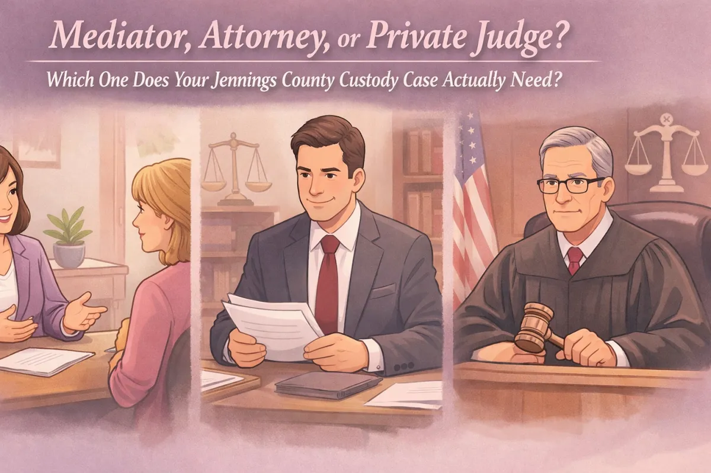
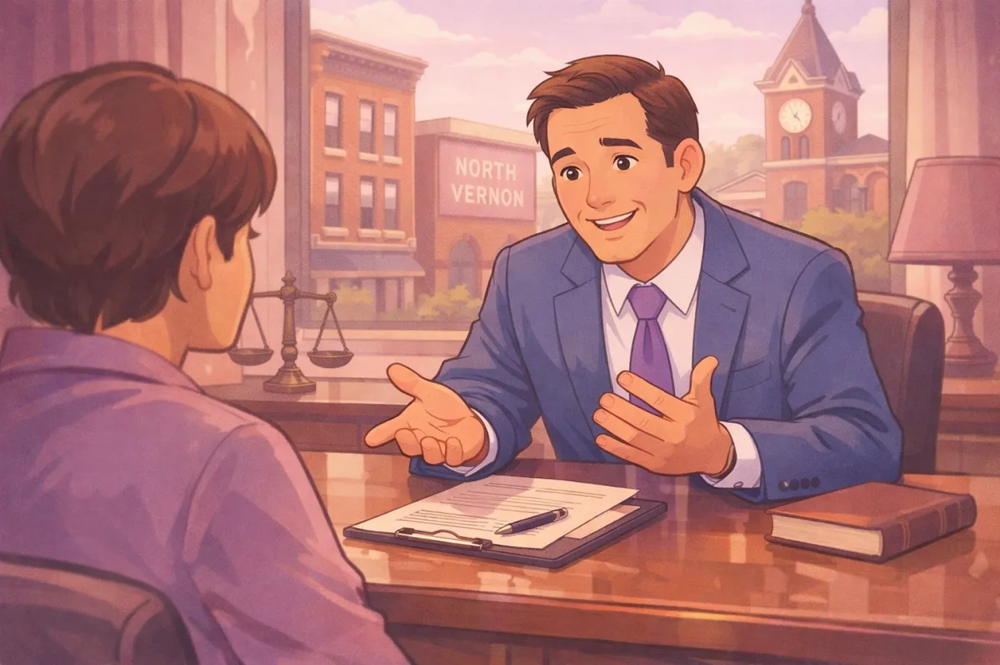

Mediator, Attorney, or Private Judge? Which One Does Your Jennings County Custody Case Actually Need?

If you are a parent in North Vernon, Vernon, or anywhere else in Jennings County, you know that nothing is more important: or more stressful: than a custody dispute. Whether you are going through a divorce or trying to update a parenting time schedule that just isn't working anymore, the legal system can feel like a maze.
In my years serving as a lawyer in Jennings County, I've seen families get stuck in the court system for months, sometimes years. The truth is, there isn't just one way to handle a custody case. Depending on your situation, you might need an advocate to fight for you, a neutral voice to help you agree, or a faster way to get a final decision.
I often tell my clients that I wear many hats. Sometimes I'm an attorney, sometimes a mediator, and sometimes a private judge. Understanding which role you need is the first step to moving forward and protecting your children.
The Attorney: Your Personal Advocate
When most people think of a Jennings County Attorney, they think of someone standing up in a courtroom. That is exactly what an attorney does: they represent you.
As your attorney, my job is to listen to what you have to say and give you options. I'm your voice in the legal system. This is the role you need when:
Communication with the other parent has completely broken down.
There are safety concerns for the children.
You need someone to file the right paperwork, meet deadlines, and argue your position in front of a magistrate or judge.
Being an attorney in Vernon, Indiana means more than just knowing the law; it means knowing the community. Whether you live in North Vernon, Scipio or Commiskey, you deserve a lawyer who understands the local courts and how local families live. If you're just starting out and feeling overwhelmed, you might want to read my guide on how to prepare for your Indiana custody hearing.

The Mediator: The Neutral Problem-Solver
Not every custody case has to end in a "win" or a "loss" in a courtroom. In fact, most Jennings County judges actually require parents to try mediation before they will set a final hearing if the hearing will last longer than two hours or if they are self represented.
As a mediator, I don't represent either parent. I'm a neutral third party. My goal is to sit down with both sides and help them find a middle ground. As we move through 2026, the Indiana Alternative Dispute Resolution (ADR) rules have seen some updates aimed at making this process even more efficient. These updates emphasize "good faith" participation, meaning you can't just show up and sit in silence; you have to genuinely try to work things out.
Why choose mediation?
Control. You and the other parent decide the schedule, not a judge who doesn't know your kids.
Cost. It is often much cheaper than a full-blown trial.
Privacy. What happens in mediation stays in mediation.
If you're looking for a way to help bridge the gap between you and an ex-partner, mediation is often the best path to keep the peace for your children.
The Private Judge: A Faster, Private Alternative
One of the biggest frustrations I hear from people in Hayden or North Vernon is how long the court backlog is. The public court system is busy. Sometimes you can wait months just to get a hearing date.
This is where a private judge comes in. In Indiana, parties can agree to hire a private judge to hear their case. As a private judge, I have the authority to make a legally binding decision, just like the judge at the courthouse would.
The benefits of a private judge in 2026 are huge:
Speed. We can schedule the hearing based on your timeline, not the court's calendar.
Privacy. If you want to keep your family matters out of the public record as much as possible, this is a great option.
Focus. You get my undivided attention for the duration of the hearing, without the distractions of a crowded public courtroom.
Many families find that hiring a private judge actually saves them money in the long run because they aren't paying for months of ongoing legal fees while waiting for a court date.
Why the "Small Town Lawyer" Approach Matters
I've spent a lot of time in the legal world, and I've learned that people in Jennings County don't want a suit-and-tie expert who talks down to them. They want someone who is accessible.
When you look for an attorney, you want someone who knows the difference between a farm schedule and a factory shift. I pride myself on being a "small town lawyer" who can wear many hats. Whether I'm acting as your advocate or your neutral mediator, I'm here to solve your legal needs without adding unnecessary drama.
I'm also big on transparency. Dealing with legal issues is expensive enough, which is why I'm upfront about things like travel fees (which I don't charge for local Jennings County work). If you are curious about my background or how I approach the law, feel free to check out my About Me page.
Which Path Is Right for You?
So, which one do you need?
If you feel like you are being bullied or your rights are being ignored, you need an attorney.
If you and the other parent mostly agree but just need help ironing out the details, you need a mediator.
If you are tired of waiting for the court and want a quick, more private resolution, you should look into a private judge.
At Chris Doran Law LLC, I handle all three. My goal is to find the path that gets you back to your life and ensures your children are taken care of.
If you aren't sure where to start, you might find some helpful context in my post about Jennings County Court 101. Understanding the basics of how our local building works can take some of the fear out of the process.
Let's Talk About Your Options
Custody cases are never easy, but they don't have to be a nightmare. Whether you are in North Vernon, Scipio, or any of the surrounding areas, I'm here to listen and help you find the right route for your family.
Don't let a "simple" case get complicated by waiting too long. If you need a Jennings County attorney who understands and actually cares about the local community, reach out.
Let's figure out which hat I need to wear to help you move forward.